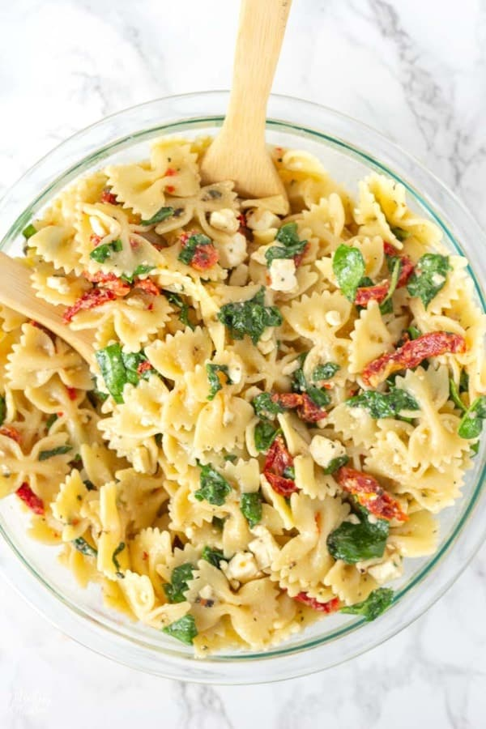

Home
Banana Bread
Rice Pudding
Sundried Tomato Pasta Salad

Description:
A simple vegetarian cold pasta salad recipe.
Use any type of pasta. Medium shells are typically the best (even though the photo show bow pasta).
Time: About 20 minutes or so.
Ingredients:
There's no specific measurements here, just do your thing, girl.
- Pasta (whatever type)
- Spinach
- Olive Oil
- Pesto
- Sundried tomatoes
- Feta cheese
- Parmesan
- Sea Salt
Steps:
- Cook the pasta according to the package's intructions.
- Drain pasta and run cold water over it to cool it.
- Transfer pasta to a serving bowl or mixing bowl if doing several servings.
- Throw in the spinach (like actaully throw it in).
- Pour a sensible amount of olive oil and mix it together.
- Add the pesto.
- Throw in the sundried tomatoes and feta cheese and mix it up, baby.
- Garnish with parmesan and sea salt.
- Proceed to mix in the garnish and just eat it.